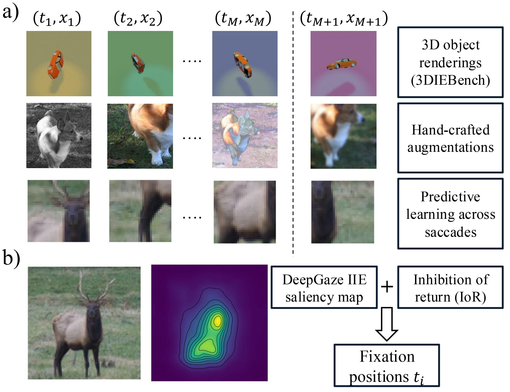
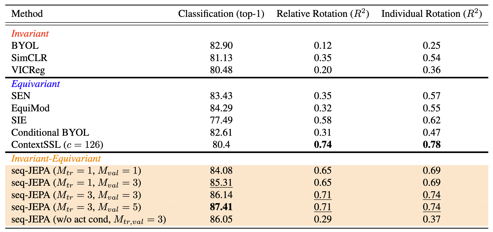

seq-JEPA processes short sequences of views, each concatenated with action embeddings, through a transformer encoder. The aggregate representation is conditioned on the next action to predict the upcoming view's representation.

Joint-embedding self-supervised learning (SSL) often creates trade-offs between coarse-grained invariance-demanding tasks (e.g., classification) and fine-grained equivariance-demanding tasks. seq-JEPA resolves this by introducing architectural inductive biases that simultaneously learn two segregated representations for both equivariance- and invariance-demanding tasks without dual loss terms. Our model processes short sequences of views concatenated with relative transformation embeddings through a transformer encoder. A predictor conditioned on the upcoming action predicts the next observation's representation. seq-JEPA excels on both invariance-demanding and equivariance-demanding downstream tasks and can perform sequence aggregation for path integration across actions and predictive learning across eye movements.
Evaluation on 3DIEBench: classification accuracy (invariance-demanding) and rotation prediction R² (equivariance-demanding). seq-JEPA achieves strong performance on both tasks simultaneously.
UMAP visualization of seq-JEPA's encoder representations. Color gradient shows equivariant structure over rotation angle.
@inproceedings{
ghaemi2025seqjepa,
title={seq-{JEPA}: Autoregressive Predictive Learning of Invariant-Equivariant World Models},
author={Hafez Ghaemi and Eilif Benjamin Muller and Shahab Bakhtiari},
booktitle={The Thirty-ninth Annual Conference on Neural Information Processing Systems},
year={2025},
url={https://openreview.net/forum?id=GKt3VRaCU1}
}